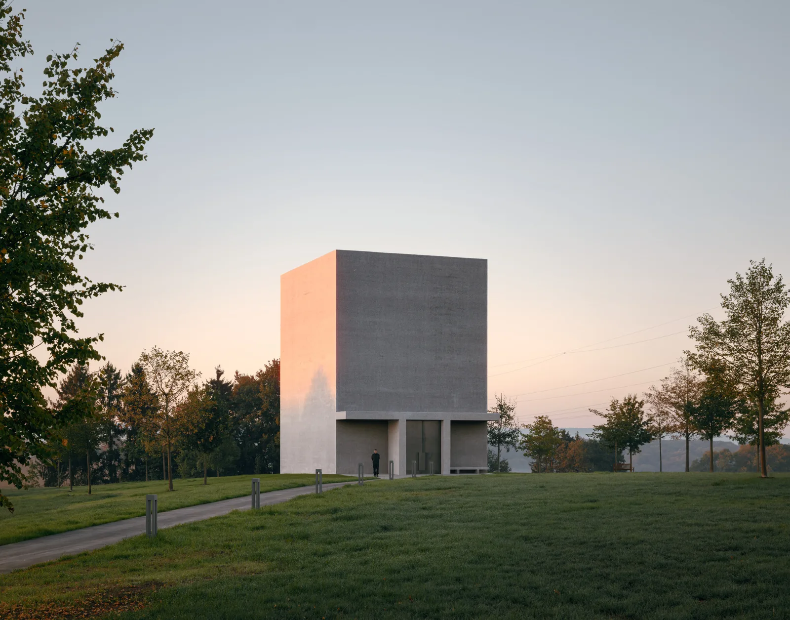
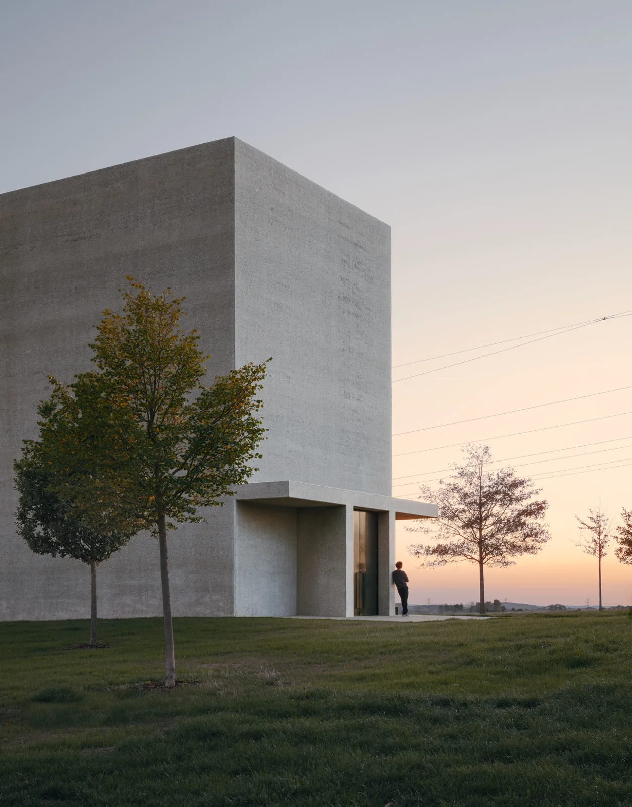
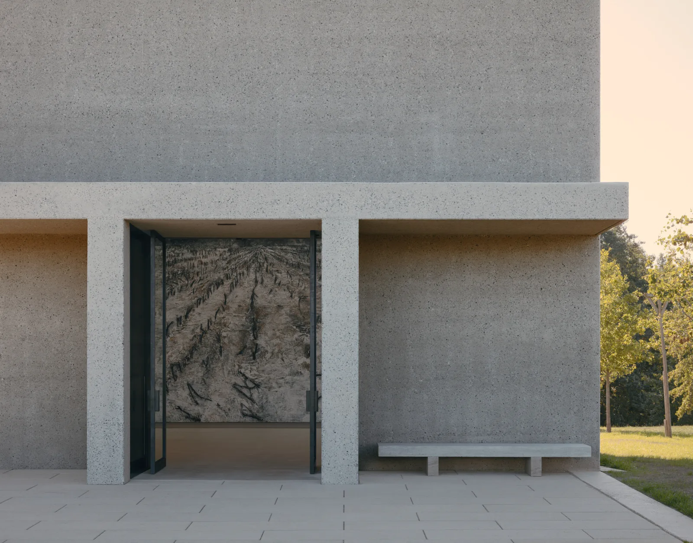
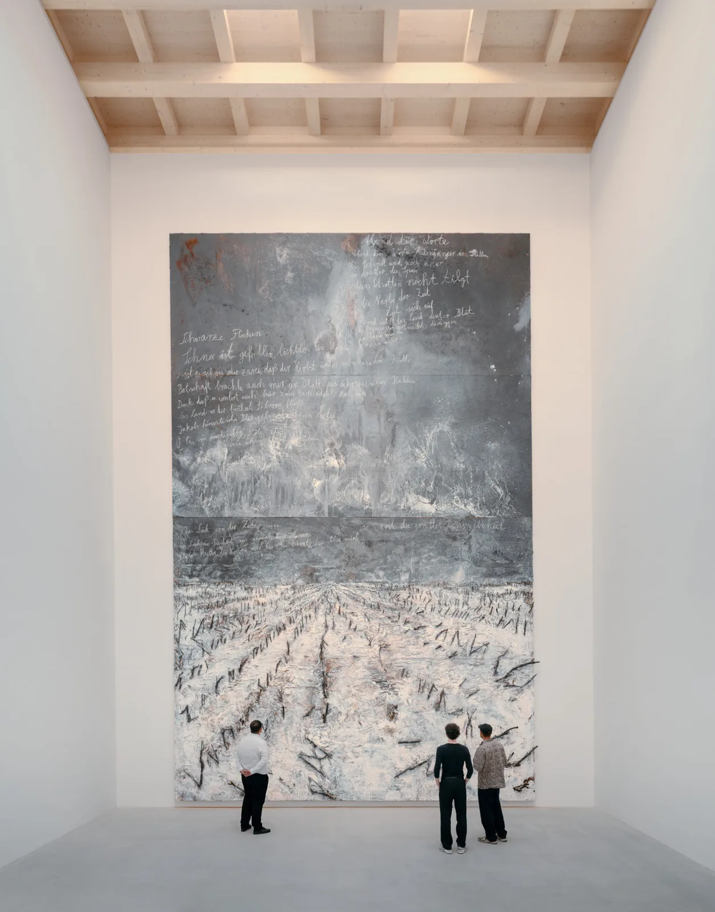
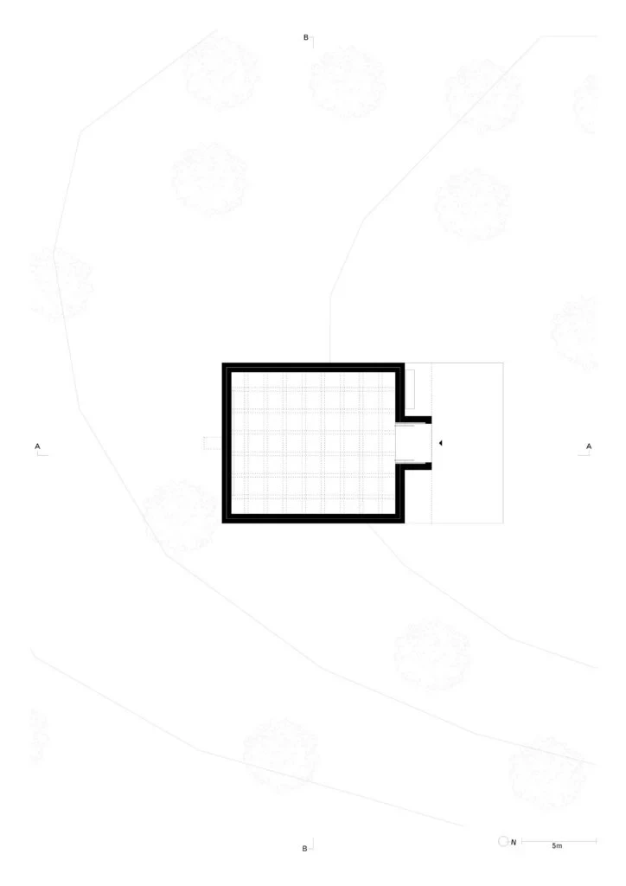
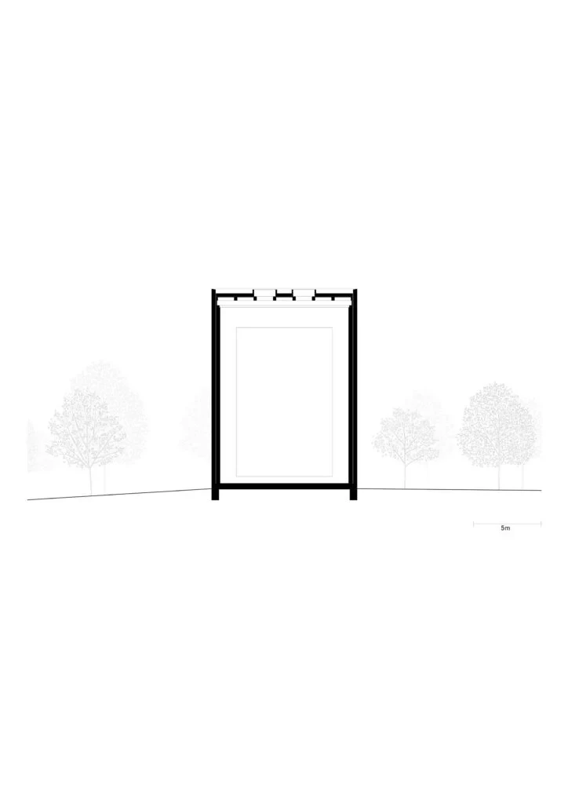
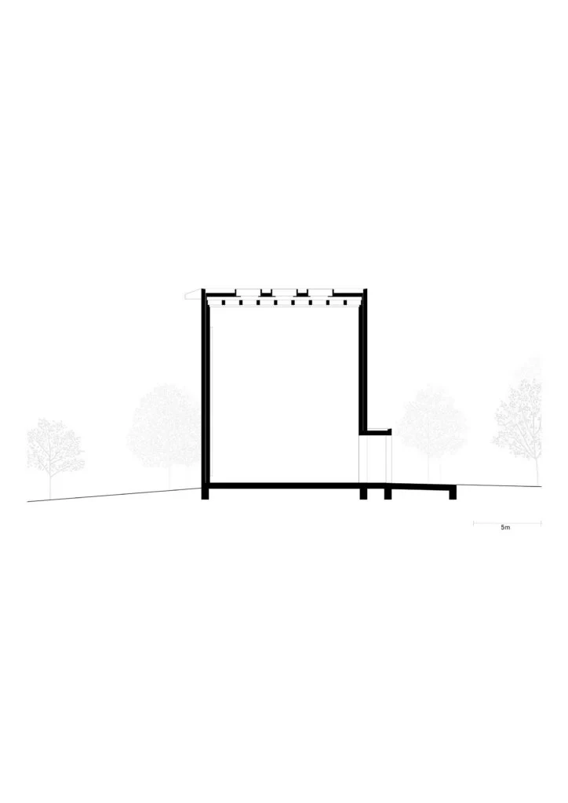

Art pavilion · 2026
Anselm Kiefer Pavilion
David Chipperfield Architects Berlin
Künzelsau, Germany
The pavilion houses Anselm Kiefer's Schwarze Flocken, a painting too large to have previously been exhibited. A sheltered entrance leads from the sculpture garden into a room organised around seeing this single work.
Kiefer helped determine the room's proportions, openings and colours. Concrete, brick and clay-plaster wall layers moderate the interior without active climate control, while rooflights between exposed timber beams admit changing daylight rather than maintaining uniform gallery illumination.


Relevant connections
SHOW
The entire pavilion is an architectural setting for the public presentation of one painting.
Images and drawings / 07











